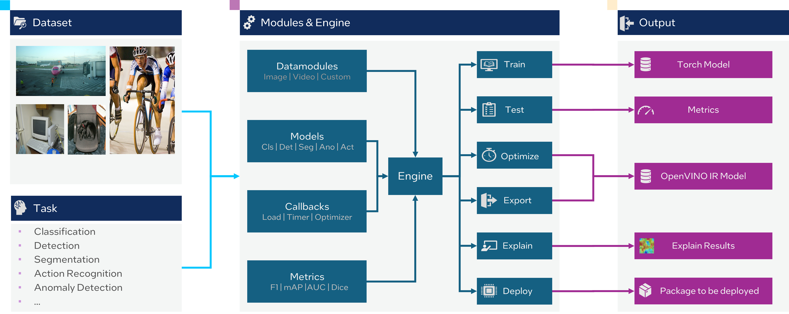

Introduction#
OpenVINO™ Training Extensions is a low-code transfer learning framework for Computer Vision.
The framework’s CLI commands and API allow users to easily train, infer, optimize and export models, even with limited deep learning expertise. OpenVINO™ Training Extensions offers diverse combinations of model architectures, learning methods, and task types based on PyTorch , Lightning and OpenVINO™ toolkit.
OpenVINO™ Training Extensions provide recipe for every supported task type, which consolidates necessary information to build a model. Model configs are validated on various datasets and serve one-stop shop for obtaining the best models in general.
The development team is continuously expanding functionality to simplify the training process — aiming for a workflow where a single CLI command or a short API call is enough to produce accurate, efficient, and robust models ready for integration into your project.
Starting with OTX v2.4.5, we introduced a new repository structure and a more flexible backend concept. We’re excited to present support for multiple backends — beginning with the OpenVINO™ backend, while all previous OTX functionality is now organized under the “native” backend.
In the future, we plan to integrate popular third-party libraries such as Anomalib <https://github.com/open-edge-platform/anomalib>_, Transformers <https://huggingface.co/docs/transformers/index>_, and more — seamlessly integrated into the repository. This will enable users to train, test, export, and optimize a wide variety of models from different backends using the same CLI commands and unified API, without the need for reimplementation.
{kind=link}

Key Features#
OpenVINO™ Training Extensions supports the following computer vision tasks:
Classification, including multi-class, multi-label and hierarchical image classification tasks.
Object detection including rotated bounding box and tiling support
Semantic segmentation including tiling algorithm support
Instance segmentation including tiling algorithm support
Anomaly recognition tasks including anomaly classification, detection and segmentation
OpenVINO™ Training Extensions provide the following features:
Native Intel GPUs (XPU) support. OpenVINO™ Training Extensions can be installed with XPU support to utilize Intel GPUs for training and testing.
Distributed training to accelerate the training process when using multiple GPUs.
Half-precision (FP16) training to reduce GPU memory usage and allow for larger batch sizes.
Class-incremental learning to add new classes to an existing model without retraining from scratch.
OpenVINO™ Training Extensions use Datumaro as the backend for dataset handling. This allows support for many common academic dataset formats per task. More formats will be supported in the future, providing additional flexibility.
Multiple backend support to easily adapt models from third-party implementations into the OpenVINO™ Training Extensions repository.
Documentation content#
Quick start guide:
Learn more about how to install OpenVINO™ Training Extensions
Learn more about how to use OpenVINO™ Training Extensions Python API.
Learn more about how to use OpenVINO™ Training Extensions CLI commands
Tutorials:
Learn how to train a classification model
Learn how to train a detection model.
Learn how to train an instance segmentation model
Learn how to train a semantic segmentation model
Learn how to train an anomaly detection model
Learn how to use advanced features of OpenVINO™ Training Extensions
Explanation section:
This section consists of an algorithms explanation and describes additional features that are supported by OpenVINO™ Training Extensions. Algorithms section includes a description of all supported algorithms:
Explanation of the task and main supervised training pipeline.
Description of the supported datasets formats for each task.
Available recipes and models.
Additional Features section consists of:
Overview of model optimization algorithms.
Auto-configuration algorithm to select the most appropriate training pipeline for a given dataset.
Tiling algorithm to detect small objects in large images.
explainable AI algorithms to visualize the model’s decision-making process.
Additional useful features like configurable input size, class incremental learning, and adaptive training.
Reference:
This section gives an overview of the OpenVINO™ Training Extensions code base, where source code for Entities, classes and functions can be found.
Release Notes:
This section contains descriptions of current and previous releases.